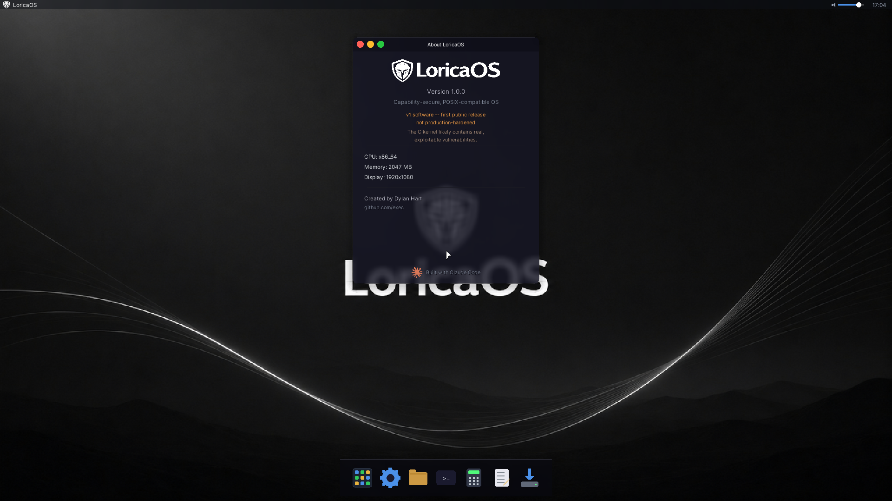
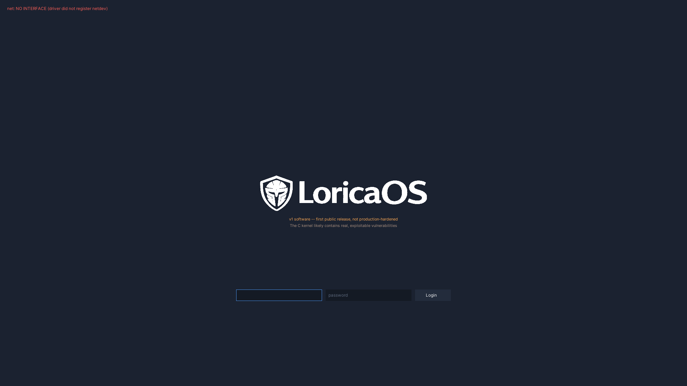

No ambient authority
A process can touch the system only through capabilities granted to it at exec time. uid=0 is cosmetic — there is no "superuser" that bypasses the checks. Forge nothing, inherit nothing by default.
Capability-secure · POSIX-compatible · built from scratch
LoricaOS grants no ambient authority. No process — not even uid 0 — holds
power it wasn't explicitly given. Authority comes only from unforgeable capability
tokens, validated at the syscall boundary. A clean-slate kernel, a real desktop,
and software you already know.
v1 software — first public release. Not production-hardened. The C kernel likely contains real, exploitable vulnerabilities. We'd rather tell you than pretend.

Most systems bolt access control onto an all-powerful root. LoricaOS starts from the opposite end.
A process can touch the system only through capabilities granted to it at exec time. uid=0 is cosmetic — there is no "superuser" that bypasses the checks. Forge nothing, inherit nothing by default.
Every privileged syscall validates an unforgeable capability token before it acts. Authority lives in the token, not the identity behind it. Fail closed by default.
Aegis is a clean-slate x86-64 kernel — no Linux or BSD lineage. Written in C with a Rust capability core, it boots, schedules, networks, and runs a real userland on its own terms.
It speaks enough POSIX (atop musl libc) to run software you already know — shells, compilers, network tools, and ported GUI apps — without pretending to be Linux.
Lumen is a compositing display server with frosted-glass windows, a dock, and a suite of native apps: terminal, files, editor, settings, calculator, media, and more.
The herald package manager installs from a Chancery-signed repository — trust flows from a signed release down to every package hash. Add software with one command.
Not a kernel demo. A composited GUI, native apps, and a package ecosystem.
uid=0 yet a privileged syscall is DENIED (ENOCAP). The "money shot" that proves no-ambient-authority. ~1600×1200.
LoricaOS is decomposed into independent, versioned pieces — each its own repository.
aegis.elf artifact — adoptable on its own. LoricaOS/Aegis ↗AF_UNIX protocol. LoricaOS/lumen ↗lumen-* repo published as a signed package.Replace these four tiles with real captures as the desktop firms up.

Free & open
The full desktop and server OS, source-available, built in the open. Everything on this page. Install it, hack on it, ship it.
Get CommunityCommercial
Hardened builds, signed enterprise packages, licensing, and support — for organizations that need a contract behind the capability model.
loricaos.com ↗Two profiles, one project. Boot the ISO in a VM, or write it to a USB stick.
The full graphical experience — Lumen, the dock, and the app suite.
Latest release ↗A text-console build — zero graphical stack, for headless and minimal installs.
Latest release ↗Quick boot in QEMU
qemu-system-x86_64 -m 2G -enable-kvm \
-cdrom loricaos-desktop.iso \
-device virtio-vga -display gtkLive session credentials
login: live
password: live
admin: administrator (capability elevation — Settings, installer, aegisctl)Remember: uid=0 grants nothing here. The admin password unlocks
capability elevation for privileged actions; the installer sets your own passwords on installed systems.